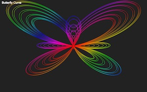

Intro To ProgrammingA simple template-format guide to programming in JavaScript for beginnersApril 10, 2020OpenCore Hackintosh GuideA guide to install macOS High Sierra on specific hardware with OpenCore; most importantly the EVGA Z270 Stinger (200 series)March 26, 2020Hackintosh Guide (Deprecated)A guide to install macOS Sierra on specific hardware; most importantly the EVGA Z270 Stinger (200 series)October 4, 2017Canvas Rings PatternAn early project created to practice JavaScript and HTML. Uses HTML5 canvas to animate colored rings.March 29, 2012Canvas GrapherAn early project created to practice JavaScript and HTML. Uses HTML5 canvas to draw a parametric colored graph.April 3, 2012Line PatternAn early project created to practice JavaScript and HTML. Uses HTML5 canvas to draw a set of lines which create a pattern over time.June 12, 2012Canvas Blur PatternAn early project created to practice JavaScript and HTML5. Uses HTML5 canvas to draw several blurred spheres fading in and out.February 23, 2012Space ZombiesAn old draft of a simple zombie-style 2D game using an HTML5 Canvas. Used often to test my multiplayer libraries using Socket.io.April 26, 2012Ball Bounce with PhysicsAn early project created to practice JavaScript and HTML. Uses HTML5 canvas to animate colored rings.April 29, 2011